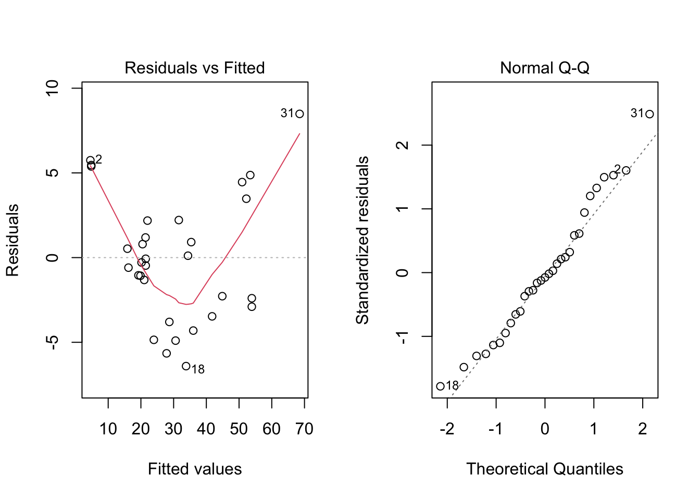
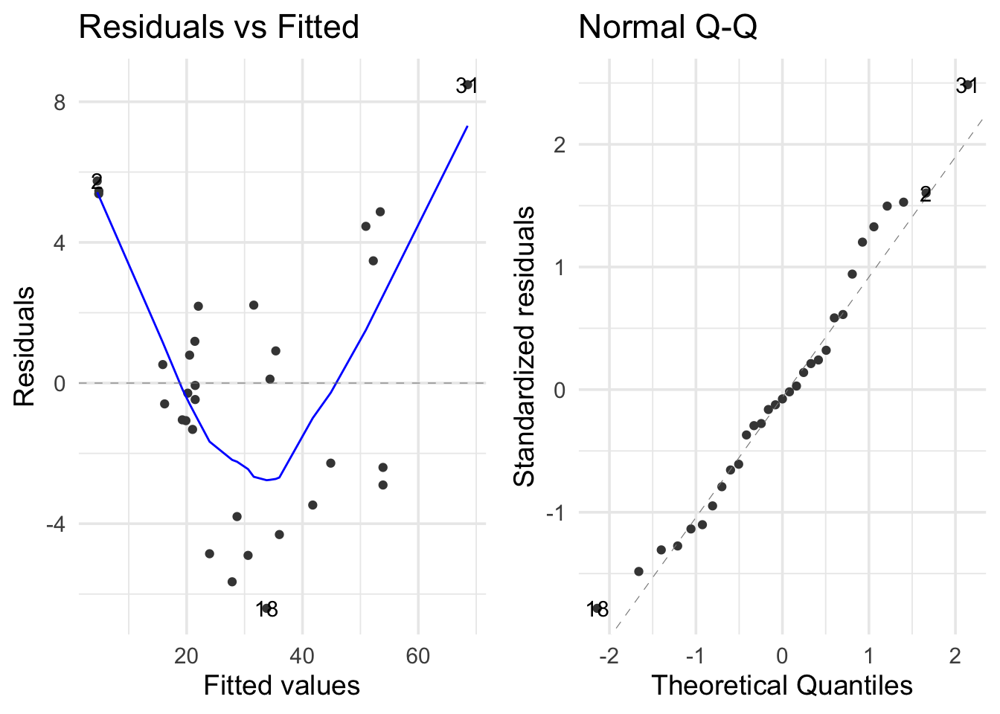

3.2 Inspecting and developing models
Being the sound analysts that we are, we should check if the assumptions of linear regression are violated. The plot() generic function has a specific method for lm objects that generates various diagnostic plots.
A short recap of the 4 main diagnostic plots produced by plot() of a model object.
- Residuals vs Fitted - to see if residuals have non-linear patterns. Good sign if you see equally spread residuals around a horizontal line without distinct patterns
- normal Q-Q plot to see if both sets of residuals are identical, if the line is straight then sets come from normal distributions
- Scale Location plot to see if residuals are spread evenly along ranges of predictors
- good to check for assumptions of homoscedasticity (equal variance)
- good to check for assumptions of homoscedasticity (equal variance)
- Residual vs Leverage plot helps to identify an influential cases (cases that don’t get along with the trend of the majority). these are identified by where residuals are located off the Cook’s distance line.

The second plot does not show any strong violation of the normality assumption. However, the first plot shows a violation of the linearity assumption (that there is a linear relationship between the response variable and the predictors). If the assumption were satisfied, the smooth red line would be like a straight horizontal line at y=0.
Note that there is a {ggplot2} way to generate the same plots.

But what about the coefficients?

##
## Call:
## lm(formula = Volume ~ ., data = trees)
##
## Residuals:
## Min 1Q Median 3Q Max
## -6.4065 -2.6493 -0.2876 2.2003 8.4847
##
## Coefficients:
## Estimate Std. Error t value Pr(>|t|)
## (Intercept) -57.9877 8.6382 -6.713 2.75e-07 ***
## Girth 4.7082 0.2643 17.816 < 2e-16 ***
## Height 0.3393 0.1302 2.607 0.0145 *
## ---
## Signif. codes: 0 '***' 0.001 '**' 0.01 '*' 0.05 '.' 0.1 ' ' 1
##
## Residual standard error: 3.882 on 28 degrees of freedom
## Multiple R-squared: 0.948, Adjusted R-squared: 0.9442
## F-statistic: 255 on 2 and 28 DF, p-value: < 2.2e-16Use {broom} for a tidy version.
## # A tibble: 3 × 5
## term estimate std.error statistic p.value
## <chr> <dbl> <dbl> <dbl> <dbl>
## 1 (Intercept) -58.0 8.64 -6.71 2.75e- 7
## 2 Girth 4.71 0.264 17.8 8.22e-17
## 3 Height 0.339 0.130 2.61 1.45e- 2## Rows: 1
## Columns: 12
## $ r.squared <dbl> 0.94795
## $ adj.r.squared <dbl> 0.9442322
## $ sigma <dbl> 3.881832
## $ statistic <dbl> 254.9723
## $ p.value <dbl> 1.071238e-18
## $ df <dbl> 2
## $ logLik <dbl> -84.45499
## $ AIC <dbl> 176.91
## $ BIC <dbl> 182.6459
## $ deviance <dbl> 421.9214
## $ df.residual <int> 28
## $ nobs <int> 31{purrr} and {dplyr} can help you scale up your modeling process.

We can compare all of the models we made before.
list(
'reg' = reg_fit,
'inter' = inter_fit,
'poly' = poly_fit,
'no_height' = no_height_fit,
'no_intercept' = no_intercept_fit
) %>%
map_dfr(glance, .id = 'id') %>%
select(id, adj.r.squared) %>%
arrange(desc(adj.r.squared))## # A tibble: 5 × 2
## id adj.r.squared
## <chr> <dbl>
## 1 poly 0.975
## 2 inter 0.973
## 3 no_intercept 0.968
## 4 reg 0.944
## 5 no_height 0.933We observe that the polynomial fit is the best.
We can create models for each group in trees2.
reg_fits <-
trees2 %>%
group_nest(group) %>%
mutate(
fit = map(data, ~ lm(formula(Volume ~ .), data = .x)),
# converts model object's coefficients to a dataframe
tidied = map(fit, tidy),
# row summary of a model
glanced = map(fit, glance),
# returns a tibble of additional metrics like Cooks distance, lower and upper bounds
# of fitted values, standard errors of fitted values
augmented = map(fit, augment)
)
.select_unnest <- function(data, ...) {
data %>%
select(group, ...) %>%
unnest(...)
}
reg_fits %>% .select_unnest(tidied)## # A tibble: 12 × 6
## group term estimate std.error statistic p.value
## <chr> <chr> <dbl> <dbl> <dbl> <dbl>
## 1 A (Intercept) -44.6 17.5 -2.55 0.0312
## 2 A Girth 4.21 0.477 8.83 0.00000998
## 3 A Height 0.250 0.294 0.849 0.418
## 4 B (Intercept) -66.1 13.9 -4.74 0.0178
## 5 B Girth 4.16 0.704 5.91 0.00969
## 6 B Height 0.520 0.123 4.24 0.0240
## 7 C (Intercept) -86.4 90.5 -0.954 0.410
## 8 C Girth 4.83 0.747 6.47 0.00748
## 9 C Height 0.680 1.20 0.567 0.611
## 10 D (Intercept) -46.3 14.8 -3.14 0.0349
## 11 D Girth 6.03 0.372 16.2 0.0000852
## 12 D Height -0.0268 0.214 -0.125 0.906## # A tibble: 4 × 13
## group r.squared adj.r.squared sigma statistic p.value df logLik AIC BIC
## <chr> <dbl> <dbl> <dbl> <dbl> <dbl> <dbl> <dbl> <dbl> <dbl>
## 1 A 0.960 0.951 3.81 107. 5.27e-7 2 -31.3 70.7 72.6
## 2 B 0.935 0.891 2.20 21.5 1.66e-2 2 -11.2 30.3 29.5
## 3 C 0.946 0.910 4.06 26.2 1.26e-2 2 -14.8 37.7 36.8
## 4 D 0.990 0.985 2.80 194. 1.04e-4 2 -15.2 38.4 38.2
## # … with 3 more variables: deviance <dbl>, df.residual <int>, nobs <int>## # A tibble: 31 × 10
## group Volume Girth Height .fitted .resid .hat .sigma .cooksd .std.resid
## <chr> <dbl> <dbl> <dbl> <dbl> <dbl> <dbl> <dbl> <dbl> <dbl>
## 1 A 10.3 8.3 70 7.81 2.49 0.252 3.91 0.0645 0.758
## 2 A 10.3 8.6 65 7.82 2.48 0.283 3.90 0.0780 0.769
## 3 A 10.2 8.8 63 8.17 2.03 0.395 3.93 0.103 0.687
## 4 A 16.4 10.5 72 17.6 -1.18 0.134 4.01 0.00566 -0.332
## 5 A 22.6 11.1 80 22.1 0.500 0.534 4.03 0.0142 0.192
## 6 A 19.1 12 75 24.6 -5.54 0.123 3.45 0.113 -1.56
## 7 A 22.2 12.9 74 28.2 -5.99 0.0837 3.38 0.0823 -1.64
## 8 A 36.3 14.5 74 34.9 1.37 0.116 4.00 0.00643 0.383
## 9 A 38.3 16 72 40.8 -2.45 0.330 3.90 0.101 -0.787
## 10 A 55.7 17.5 82 49.6 6.13 0.255 3.16 0.397 1.87
## # … with 21 more rows